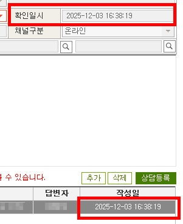
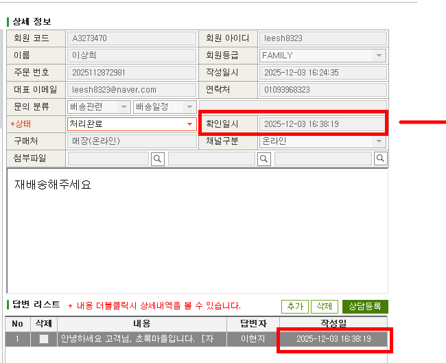
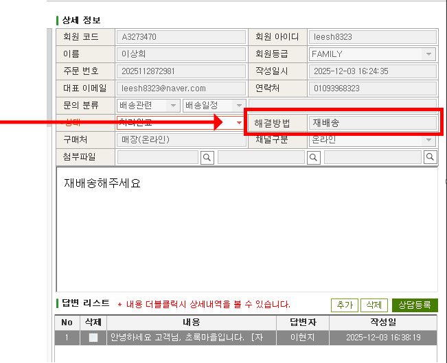

처리 단계에서 고객에게 다시 물어보는 것보다, 수집 단계에서 처음부터 제대로 받는 것이 낫다고 판단했습니다.
자유 텍스트에 묻혀 있던 고객 의도를 필수 선택값으로 구조화했고, 개발 범위를 최소화하는 스펙을 직접 설계해 SW개발팀·IT팀과 협의·구현했습니다.
결과는 AS 재확인 왕복 95% 이상 감소와 처리 리드타임 단축이었습니다.
CX 프로세스 개선CS 입력 구조 설계개발팀 협의 · 구현데이터 정합성초록마을 · 2024–재직 중
Situation
처리보다 확인이 더 많은 구조였습니다
고객 의도가 데이터로 남지 않았습니다
환불인지 교환인지를 고객이 자유 텍스트로만 남겼고, 담당자가 의미를 해석해야 했습니다. 애매한 경우 다시 고객에게 확인 문의를 보내야 했고, 고객은 1:1 채팅으로 다시 답해야 했습니다.
재확인 왕복이 처리 전체를 지연시켰습니다
고객 답변을 기다리는 동안 처리가 멈췄습니다. CS 문의 리드타임이 늘어났고, 고객 피로도와 운영 리소스 낭비가 함께 발생했습니다.
CRM에는 의미 없는 데이터가 쌓였습니다
답변 작성일과 실질적으로 동일한 "확인일시" 필드가 CRM에 별도로 존재했습니다. 활용할 수 없는 데이터가 축적되는 구조였습니다.
What I Did
처리 단계가 아니라 수집 단계를 바꿨습니다
Step 01
문제의 위치를 재정의했습니다
"확인을 더 빠르게 처리할 것인가, 아니면 확인이 필요 없게 만들 것인가." 데이터 품질은 처리 단계가 아니라 수집 단계에서 결정된다고 보고, 처리 중 추가 질문을 개선하는 대신 입력 구조 자체를 바꾸는 방향으로 접근했습니다.
Step 02
중복 필드를 발견하고 용도를 교체했습니다
CRM의 기존 "확인일시" 필드가 답변 작성일과 실질적으로 중복된다는 점을 파악했습니다. 해당 필드를 제거하고, 그 자리에 고객 요청 유형(환불/교환) 선택값을 배치하는 방식으로 설계해 개발 범위를 최소화했습니다.
Step 03
스펙을 직접 작성하고 개발팀과 협의해 구현했습니다
고객이 문의 등록 단계에서 환불·교환 의도를 필수 선택값으로 입력하도록 UX를 재설계하고, 선택된 값이 CRM에 구조화된 데이터로 저장되도록 스펙을 직접 정의했습니다.
SW개발팀·IT팀과 협의해 DB 컬럼 추가 및 UI 구현을 완료했습니다.
Outcome
수집 구조가 바뀌자 처리 구조도 바뀌었습니다
AS 재확인 왕복 95%+ 제거 — 스펙 직접 설계 → SW개발팀·IT팀 협의 → 구현 완료
CS 처리 리드타임 단축 — 고객 답변 대기 없이 수신 즉시 처리 가능한 구조로 전환
고객 피로도 감소 — 문의 후 재문의를 받지 않아도 되는 경험으로 개선
CRM 데이터 정합성 향상 — 의미 없는 중복 필드 제거, 활용 가능한 데이터로 교체
개발 비용 최소화 — 기존 필드 재활용 스펙 설계로 신규 개발 범위를 최소화해 빠르게 반영
Key Metric
95%+
AS 재확인 왕복 감소
Approach
수집 → 처리
데이터 품질 설계 단계를 수집 시점으로 이동
Evidence
3단계 개선 과정
1. 기존 입력 구조 (개선 전)

자유 텍스트 의존 구조 + 의미 없는 확인일시 필드가 함께 있던 상태.
2. 입력 구조 재설계 화면

확인일시 필드를 제거하고, 해당 위치에 고객 의도 데이터를 매핑한 구조.
3. 요청 유형 선택값 반영 구조

고객이 문의 등록 시 환불·교환을 직접 선택하고, 선택된 값이 처리 기준으로 바로 활용되는 구조.
Insight
이 경험에서 얻은 것
1
처리 속도보다 수집 구조가 먼저입니다. 재확인 왕복을 줄이는 가장 효과적인 방법은 처리를 빠르게 하는 게 아니라, 처음부터 제대로 받는 구조를 만드는 것이었습니다. 쏘카의 사고 대응·반납 이슈·결제 문의에서도 같은 원리가 작동합니다 — 접수 시점에 정확한 맥락을 받으면 처리 전체가 달라집니다.
2
고객 의도는 해석이 아니라 선택으로 받아야 합니다. 자유 텍스트에 의존하면 처리 속도와 정확도가 담당자 개인의 판단에 좌우됩니다. 입력 단계에서 선택값으로 구조화했을 때, 처리 흐름이 끊기지 않고 자연스럽게 이어졌습니다.
3
개발 범위를 최소화하는 스펙 설계가 실행 속도를 결정합니다. 기존 중복 필드를 재활용하는 방식으로 스펙을 정의한 덕에, 신규 개발 없이 빠르게 구현할 수 있었습니다. 운영기획이 개발 부담을 줄이는 설계를 할 수 있으면, 실행까지의 거리가 짧아집니다.